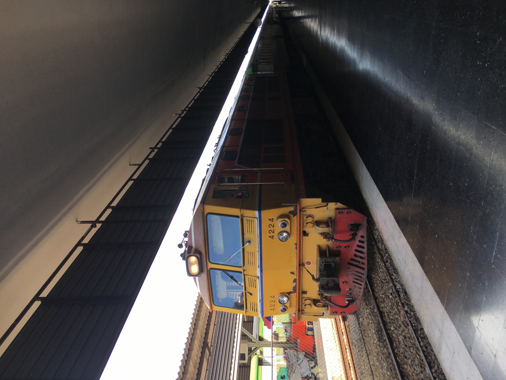
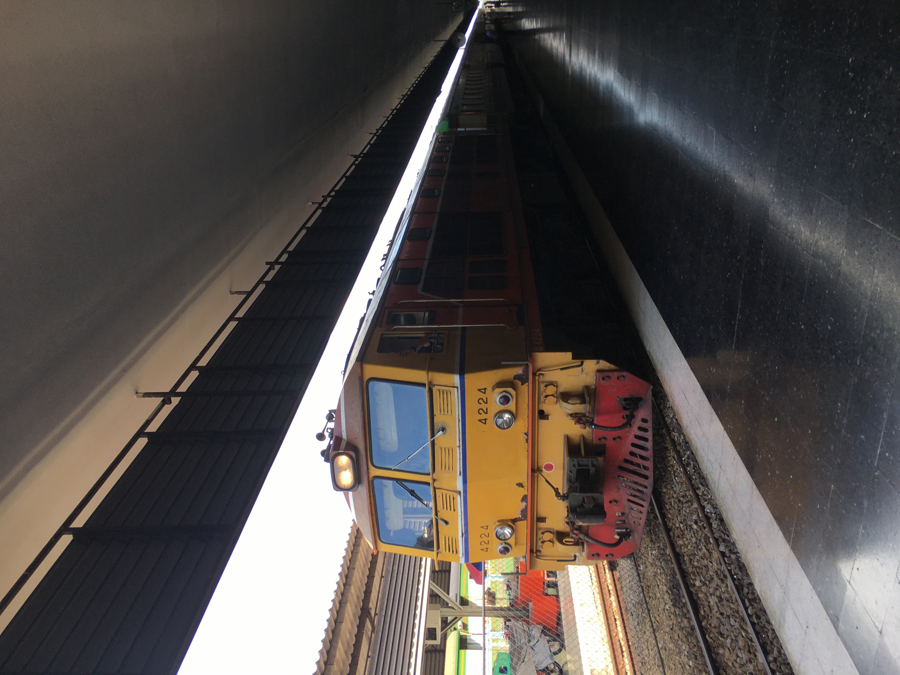

Once Upon A Beach
A very enjoyable trip to the beach near the house on my bike with many obstacles encountered Even though I encountered something unexpected, everything still went well.....
read moreMy First Hiking Experience
A very difficult hiking with an adventure that has never been been before in my life with my warm family I felt like an ant in a house of giants, my head kissing the sky, and my heart pounding ....
read moreOne-Day Trip Travel With Train Alone
I traveled on the Special Express 14, a train journey that starts from the northern province of Chiang Mai and ends in the capital city of Bangkok. It was my first train trip.
The railway route between Chiang Mai and Bangkok spans 467 miles, making it one of the longest in Thailand. The journey has a reputation among backpackers as a "must-try experience" in Thailand, being described as "lovely" and "a lifetime adventure for Westerners."
 

Wonderful Concert
Without warning, the lights went dark. This was the moment I had been waiting for. My adrenaline went through the roof. The time had finally come that I would get to see and hear my first live concert....
read moreThe Sunset Time With Best Friends
the beach is best spent with friends enjoying the water and its transition of a hectic day time to a peaceful nighttime.Each beach has its unique value to itself and to me. One day I was going to the beach...
read moreStory Of First Love
First love is not your only love. It's not necessarily your best love, or your last love. First love is first. Your very first experience of love. It's something wonderful, amazing and new,
but first is not synonymous with forever. And first is definitely not connected whatsoever to final. It's called your 'first love' simply because it's just that - your first. Not your last.